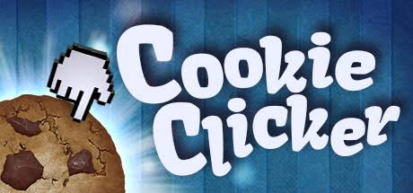
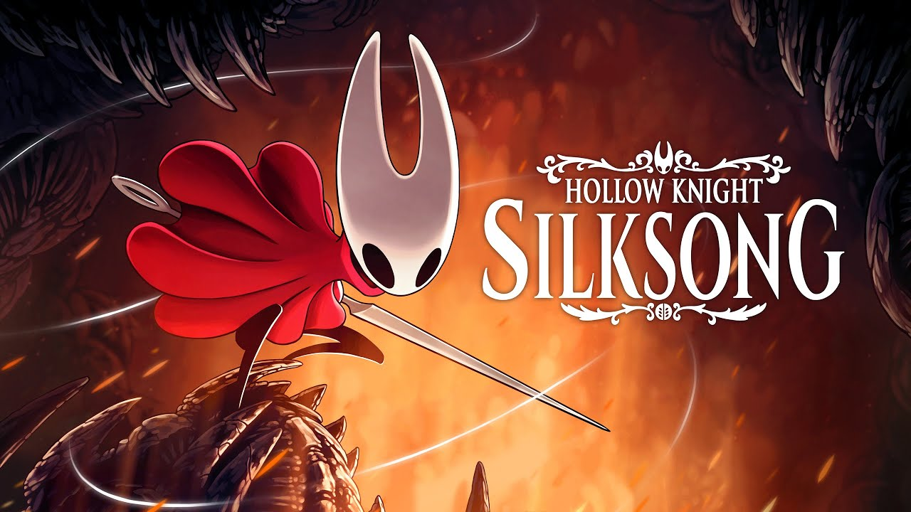
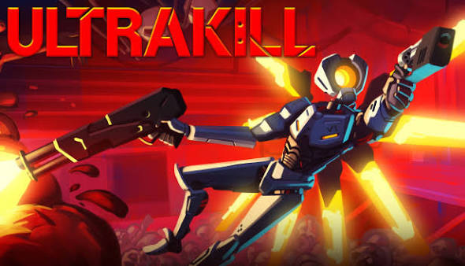
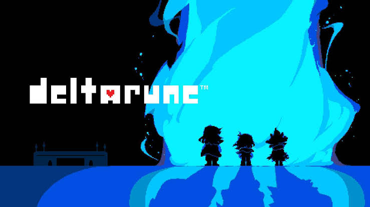
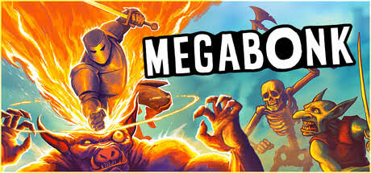
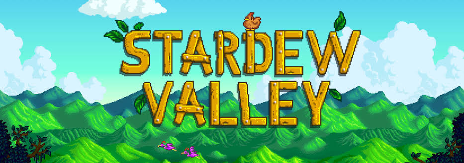
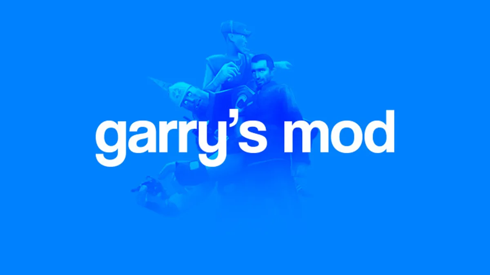
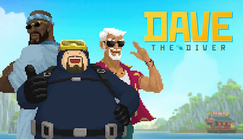
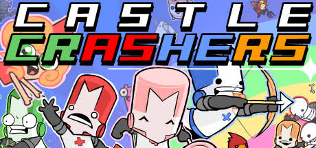
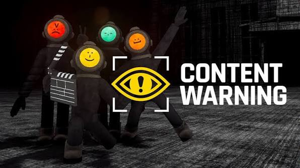

Top 1
Cookie Clicker
Um jogo incremental onde você clica em um biscoito gigante para produzir bilhões de cookies e melhorar seu império.
Analisar
Jogos que mais tomaram o meu tempo que nunca mais vai voltar

Um jogo incremental onde você clica em um biscoito gigante para produzir bilhões de cookies e melhorar seu império.
Analisar
Um jogo no estilo metroidvania, onde você controla Hornet no reino em ruínas de Fiarlongo.
Analisar
Um FPS frenético, no qual você controla a maquina movida por sangue V1 e explora as profundezas do inferno.
Analisar
Um RPG focado em historia onde você controla um humano chamado Kris e explora mundos sombrios junto de seus amigos para realizar uma profecia.
Analisar
Um jogo do estilo roguelike de sobrevivência, onde você pode jogar com multiplos personagens e sobrevive a hordas intermináveis de inimigos.
Analisar
Um simulador de vida no campo, no qual você herda a fazenda do seu avô e explora o Vale do Orvalho enquanto planta, pesca e conhece os moradores do vale.
Analisar
Um jogo estilo sandbox onde você não tem um objetivo definido além de se divertir.
Analisar
Um jogo de aventura e gestão, no qual você controla o mergulhador Dave e explora o oceano durante o dia para servir sushi no seu restaurante à noite.
Analisar
Um jogo de combate no estilo beat 'em up em 2D, onde você controla cavaleiros com diferentes habilidade e explora um mundo medieval para salvar as princesas que foram sequestradas.
Analisar
Um jogo de terror cooperativo, onde você e seus amigos exploram ruinas cheias de monstros com o objetivo de grava-los e viralizar nas redes sociais.
Analisar